kernel
环境搭建
在Linux Kernel Archive下载对应版本的内核源码 wget https://cdn.kernel.org/pub/linux/kernel/v5.x/linux-5.11.tar.xz
tar -xvf linux-5.11.tar.xz
cd linux-5.11.1/
make menuconfigmake -j$(nproc) bzImage
arch/x86/boot/目录下提取到bzImage，为压缩后的内核文件 再下载busybox构建文件系统，在busybox.net下载版本 wget https://busybox.net/downloads/busybox-1.33.0.tar.bz2
tar -jxvf busybox-1.33.0.tar.bz2
cd busybox-1.33.0/
make menuconfigSettings —> Build static file (no shared libs) make install
cd _install
mkdir -pv {bin,tmp,sbin,etc,proc,sys,home,lib64,lib/x86_64-linux-gnu,usr/{bin,sbin}}
touch etc/inittab
mkdir etc/init.d
touch etc/init.d/rcS
chmod +x ./etc/init.d/rcSgedit etc/inittab ::sysinit:/etc/init.d/rcS
::askfirst:/bin/ash
::ctrlaltdel:/sbin/reboot
::shutdown:/sbin/swapoff -a
::shutdown:/bin/umount -a -r
::restart:/sbin/initetc/init.d/rcS sudo cat <<EOF > etc/init.d/rcS
#!/bin/sh
mount -t proc none /proc
mount -t sysfs none /sys
mount -t devtmpfs devtmpfs /dev
mount -t tmpfs tmpfs /tmp
mkdir /dev/pts
mount -t devpts devpts /dev/pts
echo -e "\nBoot took $(cut -d' ' -f1 /proc/uptime) seconds\n"
setsid cttyhack setuidgid 1000 sh
poweroff -d 0 -f
EOFecho "root:x:0:0:root:/root:/bin/sh" > etc/passwd
echo "ctf:x:1000:1000:ctf:/home/ctf:/bin/sh" >> etc/passwd
echo "root:x:0:" > etc/group
echo "ctf:x:1000:" >> etc/group
echo "none /dev/pts devpts gid=5,mode=620 0 0" > etc/fstabfind . | cpio -o --format=newc > ../rootfs.cpio
cpio -idv < ./rootfs.cpio
bzImage和rootfs.cpio放到同一个目录下，然后编写sh脚本 #!/bin/sh
qemu-system-x86_64 \
-m 128M \
-kernel ./bzImage \
-initrd ./rootfs.cpio \
-monitor /dev/null \
-append "root=/dev/ram rdinit=/sbin/init console=ttyS0 oops=panic panic=1 loglevel=3 quiet kaslr" \
-cpu kvm64,+smep \
-smp cores=2,threads=1 \
-nographic \
-s
-m：虚拟机内存大小-kernel：内存镜像路径-initrd：磁盘镜像路径 -append：附加参数选项nokalsr：关闭内核地址随机化，方便我们进行调试rdinit：指定初始启动进程，/sbin/init进程会默认以/etc/init.d/rcS作为启动脚本loglevel=3&quiet：不输出logconsole=ttyS0：指定终端为/dev/ttyS0，这样一启动就能进入终端界面-monitor：将监视器重定向到主机设备/dev/null，这里重定向至null主要是防止CTF中被人给偷了qemu拿flag-cpu：设置CPU安全选项，在这里开启了smep保护（smep保护就不能采用ret2usr手法了）-s：相当于-gdb tcp::1234的简写（也可以直接这么写），后续我们可以通过gdb连接本地端口进行调试
机制
KASLR
和普通用户态的ASLR差不多，都是基地址+偏移
在未开启 KASLR 保护机制时 * 内核代码段的基址为 0xffffffff81000000 * 直接映射区域的基址为 0xffff888000000000
FGKASLR
KASLR的plus版本，以函数粒度重新排布内核代码 原来不同的函数会在.text一个节上，现在不同的函数在不同的节上
ksymtab
kernel_symbol结构体其记录了函数的偏移、函数名的偏移以及命名空间的偏移 在使用fgkalsr编译后函数重定向通过此结构体 struct kernel_symbol {
int value_offset; // 函数的偏移量
int name_offset; // 符号名称的偏移量
int namespace_offset; // 符号命名空间的偏移量
};kernel_symbol结构体存储的偏移就能找到具体函数的内存地址 比如 cat /proc/kallsyms | grep commit_creds
ksymtab的偏移 __start___ksymtab和__stop___ksymtab 被记录在each_symbol_section函数中 只需要 cat /proc/kallsyms | grep each_symbols_section
> addr_A
x/10i arrd_A
> ...
> mov rbx,addr_B
> ...
x/10gx addr_B
> addr_C
x/10wx addr_C
> neg_offset
x/10i addr_B + neg_offset - 0x100000000
> addr_offset_function
SMAP/SMEP
指管理模式访问保护和管理模式执行保护 用来防止内核态访问/执行用户态数据，完全将内核空间与用户空间隔离 绕过的两种方式: 篡改CR4寄存器->ret2usr：CR4寄存器的第20位标识SMEP开关（0关，1开），利用kernel ROP篡改CR4，然后完成ret2usr。 不过现在都是KPTI的内核，内核页面的用户地址没有执行权限，ret2usr已经过时
ret2dir：简单说，把用户地址的数据映射到内核地址空间上。利用内核线性映射区对物理空间地址的完整映射，可以找到用户空间的数据，但是地址在内核空间上，利用内核地址访问用户的数据
KPTI
指内核页表隔离，内核空间与用户空间使用两组不同的页表集
内存管理-转换为物理内存

内核中的寻址空间大小是由CONFIG_ARM64_VA_BITS控制的 这里以48位为例，ARMv8中 Kernel Space的页表基地址存放在TTBR1_EL1寄存器中，内核地址空间的高位为全1，（0xFFFF0000_00000000 ~ 0xFFFFFFFF_FFFFFFFF） User Space页表基地址存放在TTBR0_EL0寄存器中，用户地址空间的高位为全0，（0x00000000_00000000 ~ 0x0000FFFF_FFFFFFFF）
当 CPU 收到一个虚拟地址转换请求时 1. 检查虚拟地址高 16 位是否为全 0 或全 1 2. 若全 0 → 用 TTBR0_EL1 的值作为页表基址，开始多级页表遍历 3. 若全 1 → 用 TTBR1_EL1 的值作为页表基址，开始多级页表遍历 4. 否则 → 触发地址异常
TTBR0_EL1：存放用户进程页表的物理基址 * 每个用户进程有独立的页表 → 进程切换时，内核会更新 TTBR0_EL1 的值 * 仅用于转换用户空间虚拟地址
TTBR1_EL1：存放内核全局页表的物理基址 * 内核页表是全局的 → 所有进程共享同一套内核页表，进程切换时 TTBR1_EL1 无需修改 * 仅用于转换内核空间虚拟地址
内存管理-访问内存

TLB 是 CPU 内核内部的硬件组件，和 L1 指令 / 数据缓存一样，属于 CPU 片上高速存储，物理上集成在 MMU 模块中。
- TLB 的分类
- 按地址类型分：指令 TLB（ITLB） 缓存指令页的页表项，数据 TLB（DTLB） 缓存数据页的页表项
- 按页大小分：支持大页（如 2MB/1GB）的 TLB 条目会单独划分区域，避免小页条目挤占大页空间
- TLB 失效的影响
- 若地址转换的页表项不在 TLB 中（TLB Miss），CPU 会触发页表遍历：去内存中查多级页表（如 x86_64 的 4 级页表），找到后将页表项填入 TLB，供后续访问复用
- 频繁的 TLB Miss 会显著降低性能，这也是内核尽量使用大页（HugePage）的原因 —— 一个大页表项能覆盖更大的内存区域，减少 TLB 条目占用，降低 Miss 率
- 内核对 TLB 的管理
- 当内核修改页表（如
vmalloc分配内存、页表映射变更）时，必须主动刷新 TLB（如执行invlpg指令），否则 CPU 会使用旧的 TLB 条目，导致地址转换错误 - 不同架构的 TLB 刷新指令不同：x86 用
invlpg，ARMv8 用tlbi系列指令
- 当内核修改页表（如
TLB：MMU工作的过程就是查询页表的过程，CPU从虚拟地址中提取虚拟页号，到 TLB 中匹配直接得到对应的物理页号和权限，再通过物理页号 + 页内偏移得到真实的物理地址，发起内存读写请求
对于同一个内存，更大的大页对应的虚拟页号位数更少，可以覆盖更大的内存空间，直接减少 TLB Miss 概率，提升地址转换效率（1 个 1GB 大页 TLB 条目 = 256 个 4MB 页条目 = 1048576 个 4KB 页条目）
内存管理-页

通常采用四级页表，页全局目录(PGD)，页上级目录(PUD)，页中间目录(PMD)，页表(PTE)
- 从
CR3寄存器中读取页目录所在物理页面的基址（即所谓的页目录基址），从线性地址的第一部分获取页目录项的索引，两者相加得到页目录项的物理地址 - 第一次读取内存得到
pgd_t结构的目录项，从中取出物理页基址取出，即页上级页目录的物理基地址 - 从线性地址的第二部分中取出页上级目录项的索引，与页上级目录基地址相加得到页上级目录项的物理地址
- 第二次读取内存得到
pud_t结构的目录项，从中取出页中间目录的物理基地址 - 从线性地址的第三部分中取出页中间目录项的索引，与页中间目录基址相加得到页中间目录项的物理地址
- 第三次读取内存得到
pmd_t结构的目录项，从中取出页表的物理基地址 - 从线性地址的第四部分中取出页表项的索引，与页表基址相加得到页表项的物理地址
- 第四次读取内存得到
pte_t结构的目录项，从中取出物理页的基地址 - 从线性地址的第五部分中取出物理页内偏移量，与物理页基址相加得到最终的物理地址
- 第五次读取内存得到最终要访问的数据
内存管理-ELF程序内存映射
一、整体概述
ELF 可执行文件从加载到内存映射建立，遵循 “先虚拟，后物理，按需分配” 的核心原则。整个过程分为两大阶段：
第一阶段：虚拟地址空间规划（execve 阶段）
解析 ELF 文件格式
为进程创建
mm_struct和页表根节点划定虚拟内存区域（
vm_area_struct）
第二阶段：物理内存实际映射（运行时阶段）
首次访问触发缺页异常
动态分配页表中间层级（
PUD/PMD/PTE）分配物理内存并建立映射
二、详细流程分解
步骤 1：执行触发与 ELF 解析
用户态：用户输入 ./hello → Shell 调用 execve()
内核态：sys_execve() → do_execve() → load_elf_binary()
关键操作：
内核读取 ELF 头部
Elf64_Ehdr，判断文件类型：ET_EXEC：非 PIE，固定基址（如 0x400000）ET_DYN：PIE，需要 ASLR 随机化
读取程序头表
Elf64_Phdr，获取可加载段信息（.text、.data等）
关键数据结构：
linux_binprm：临时存放加载参数elf64_phdr：程序段描述符
步骤 2：进程内存描述符创建
load_elf_binary() → mm_alloc() → mm_init()
关键操作：
分配
mm_struct结构体调用
pgd_alloc()分配 PGD（页全局目录）物理页初始化
mm_struct核心字段：
mm->pgd = pgd_alloc(mm); // 页表根节点 |
关键点：
此时只分配了 PGD 根页（4KB 物理页）
PUD/PMD/PTE均未分配，节省内存TTBR0_EL1仍指向原进程页表
步骤 3：虚拟内存区域创建与基址随机化
3.1 基址确定
arch_pick_mmap_layout() → randomize_stack_top()
PIE vs 非 PIE 差异：
| 类型 | ELF 类型 | 基址确定方式 | 典型基址 |
|---|---|---|---|
| 非 PIE | ET_EXEC | 固定值 | 0x400000 |
| PIE | ET_DYN | 内核随机分配 | 0x5555000000~0x7777000000 |
PIE 随机化细节：
3.2 vm_area_struct 创建
load_elf_binary() → elf_map() → mmap_region()
各段处理逻辑：
| 段类型 | 创建时机 | 权限 | 特殊标志 |
|---|---|---|---|
| 代码段 | ELF 加载时 | r-x | VM_EXEC |
| 数据段 | ELF 加载时 | rw- | VM_WRITE |
| BSS 段 | ELF 加载时 | rw- | VM_WRITE |
| 栈 | setup_arg_pages() | rw- | VM_GROWSDOWN |
| 堆 | set_brk() | rw- | VM_GROWSUP |
关键数据结构： vm_area_struct
struct vm_area_struct { |
虚拟地址最终布局示例（PIE）：
0x5555000000 ~ 0x5555001000 .text (代码段) |
步骤 4：页表框架的惰性建立
核心原则： 页表中间层级（PUD/PMD）按需分配
4.1 进程创建时的页表状态
// 只分配 PGD 根页 |
4.2 ARMv8 4 级页表结构
虚拟地址 [48位] = [PGD(9)][PUD(9)][PMD(9)][PTE(9)][Offset(12)] |
各级覆盖范围：
PGD：512GB（2^39 字节）
PUD：1GB（2^30 字节）
PMD：2MB（2^21 字节）
PTE：4KB（2^12 字节）
步骤 5：进程切换与页表激活
context_switch() → switch_mm() → cpu_switch_mm()
ARMv8 硬件操作：
// 将新进程的 PGD 物理地址写入 TTBR0_EL1 |
关键点：
TTBR0_EL1指向进程私有用户页表TTBR1_EL1指向内核全局页表（不变）TLB 刷新确保旧进程映射失效
步骤 6：首次访问触发缺页异常
6.1 异常触发流程
用户态：执行第一条指令（PC = 入口地址） 硬件：MMU 遍历页表发现 PTE 无效 → 触发 Data/Instruction Abort 内核：el0_sync → do_mem_abort() → do_page_fault()
ARMv8 缺页异常原因码（ESR_EL1）：
0b000000：地址大小故障
0b000100：转换故障（页表项无效）
0b000101：权限故障
6.2 缺页处理核心逻辑
handle_mm_fault() |
6.3 不同段类型的映射策略
| 段类型 | 缺页类型 | 处理函数 | 物理页来源 |
|---|---|---|---|
| 代码段 | 文件映射 | do_read_fault() | page cache / 磁盘 |
| 数据段 | 文件映射 | do_shared_fault() | page cache / 磁盘 |
| BSS 段 | 匿名映射 | do_anonymous_page() | 零页 → COW |
| 栈 | 匿名映射 | do_anonymous_page() | 零页 → COW |
| 堆 | 匿名映射 | do_anonymous_page() | 新分配物理页 |
代码段文件映射示例：
// 物理页分配与映射 |
步骤 7：堆的动态扩展机制
7.1 堆地址的三阶段确定
阶段 1：ELF 解析时（虚拟预留） set_brk() → 创建 vm_area_struct 范围：基址+偏移 ~ 基址+偏移+4KB（仅占位）
阶段 2：第一次 malloc() 时（虚拟扩展） brk() 系统调用 → 扩展 vm_area_struct 范围 例：0x5555004000 → 0x5555004800
阶段 3：首次访问时（物理映射） 缺页异常 → 分配物理页 → 建立 PTE 映射
7.2 brk() 系统调用流程
SYSCALL_DEFINE1(brk, unsigned long, brk) |
步骤 8：后续访问与 TLB 加速
8.1 TLB 命中流程
虚拟地址 0x5555000000 → TLB 查询 ↓ 命中 物理地址 0x80005678000 + 偏移 → 访问内存 ↓ 未命中（TLB Miss） 硬件遍历页表：TTBR0_EL1 → PGD → PUD → PMD → PTE 获取物理地址并填充 TLB
8.2 多级页表遍历开销
TLB 命中：1~2 个时钟周期
TLB 未命中 + 页表遍历：几十到上百时钟周期
缺页异常：数千到数万时钟周期（涉及磁盘 I/O 时更慢）
三、核心数据结构关系图
进程控制块 (task_struct) |
四、PIE 与非 PIE 的完整对比
| 维度 | 非 PIE (ET_EXEC) | PIE (ET_DYN) |
|---|---|---|
| ELF 类型 | ET_EXEC | ET_DYN |
| 入口地址 | 绝对地址 (0x400000) | 相对偏移 (0x1000) |
| 虚拟基址 | 固定 0x400000 | 随机 (ASLR) |
| 页表构建 | 固定 PGD 偏移 | 随机 PGD 偏移 |
| 安全性 | 低（地址可预测） | 高（ASLR 防护） |
| 兼容性 | 传统方式 | 现代标准（Android/Linux） |
| 加载器 | 内核直接加载 | 内核+动态链接器 |
内存管理-组织物理内存
node目前计算机系统有两种体系结构：
- 非一致性内存访问
NUMA(Non-Uniform Memory Access)意思是内存被划分为各个node，访问一个node花费的时间取决于CPU离这个node的距离。每一个cpu内部有一个本地的node，访问本地node时间比访问其他node的速度快 - 一致性内存访问
UMA(Uniform Memory Access)也可以称为SMP(Symmetric Multi-Process)对称多处理器。意思是所有的处理器访问内存花费的时间是一样的。也可以理解整个内存只有一个node
zone
ZONE的意思是把整个物理内存划分为几个区域，每个区域有特殊的含义
page
代表一个物理页，在内核中一个物理页用一个struct page表示。
page frame
为了描述一个物理page，内核使用struct page结构来表示一个物理页。假设一个page的大小是4K的，内核会将整个物理内存分割成一个一个4K大小的物理页，而4K大小物理页的区域我们称为page frame
内存管理-分区页框分配器
有时候目标管理区不一定有足够的页框去满足分配，这时候系统会从另外两个管理区中获取要求的页框，但这是按照一定规则去执行的，如下：
- 如果要求从
DMA区中获取，就只能从ZONE_DMA区中获取 - 如果没有规定从哪个区获取，就按照顺序从
ZONE_NORMAL -> ZONE_DMA获取 - 如果规定从
HIGHMEM区获取，就按照顺序从ZONE_HIGHMEM -> ZONE_NORMAL -> ZONE_DMA获取

struct page *__alloc_frozen_pages_noprof(gfp_t gfp, unsigned int order, |
在页面分配时，有两种路径可以选择，如果在快速路径中分配成功了，则直接返回分配的页面；快速路径分配失败则选择慢速路径来进行分配
- 正常分配（或叫快速分配）：
- 如果分配的是单个页面，考虑从
per CPU缓存中分配空间，如果缓存中没有页面，从伙伴系统中提取页面做补充。 - 分配多个页面时，从指定类型中分配，如果指定类型中没有足够的页面，从备用类型链表中分配。最后会试探保留类型链表。
慢速（允许等待和页面回收）分配
当上面两种分配方案都不能满足要求时，考虑页面回收、杀死进程等操作后在试
内存管理-水位
衡量当前系统内存状态，内存watermark水位就能很好的衡量系统内存状态，内存状态的划分分三个层次：HIGH、LOW、MIN，系统针对内存不同的状态就会做不同的内存行为，对系统内存状态进行管控
- 如果空闲页数目
< min值，则该zone非常缺页，页面回收压力很大，应用程序写内存操作就会被阻塞，直接在应用程序的进程上下文中进行回收，即direct reclaim - 如果空闲页数目小于
< low && > min值，kswapd线程将被唤醒，并开始释放回收页面 - 如果空闲页面的值
> high值，则该zone的状态很完美,kswapd线程将重新休眠
通过init_per_zone_wmark_min 、 __setup_per_zone_wmarks计算水位
在boost_watermark中计算出watermark_boost再进入balance_pgdat设置boost 当boosted enable后，wakeup_kcompactd进行内存碎片整理，一定程度上会缓解系统内存碎片化问题
if (boosted) { |
内存管理-Buddy分配算法
空闲内存都会交给内核内存管理系统来进行统一管理和分配，内核中会把内存按照页来组织分配，随着进程的对内存的申请和释放，系统的内存会不断的区域碎片化，到最后会发现，明明系统还有很多空闲内存，却无法分配出一块连续的内存，这对于系统来说并不是好事，而伙伴系统算法就可以缓解这种碎片化
把所有的空闲页框分组为11个块链表，每个块链表分别包含大小为1，2，4，8，16，32，64，128，256，512和1024个连续页框的页框块，最大可以申请1024个连续页框，对应4MB大小的连续内存，每个页框块的第一个页框的物理地址是该块大小的整数倍

static struct page * |
首先遍历当前zone，按照HIGHMEM->NORMAL的方向进行遍历，判断当前zone是否能够进行内存分配的条件是首先判断free memory是否满足low water mark水位值，如果不满足则进行一次快速的内存回收操作，然后再次检测是否满足low water mark，如果还是不能满足，相同步骤遍历下一个zone，满足的话进入正常的分配情况，即rmqueue函数，这也是伙伴系统的核心
static inline |
内存管理-碎片化整理
主要应用了内核的页面迁移机制，是一种将可移动页面进行迁移后腾出连续物理内存的方法


内存管理-slub分配器
伙伴系统是以页为单位分配内存，但是现实中很多时候却以字节为单位，不然申请10Bytes内存还要给1页的话就太浪费了，slab分配器就是为小内存分配而生的，slub分配器分配内存以Byte为单位，基于伙伴系统分配的大内存进一步细分成小内存分配
slub把内存分组管理，每个组分别包含8,16,32,...,2048个字节，在4K页大小的默认情况下，另外还有两个特殊的组，分别是96B和192B，之所以这样分配是因为如果申请2^12B大小的内存，就可以使用伙伴系统提供的接口直接申请一个完整的页面，加上整页分配共12组，
可以把一个kmem_cache结构体看做是一个特定大小内存的零售商，整个slub系统中共有12个这样的零售商，每个零售商只零售特定大小的内存，零售商把这些整页的内存分成许多小内存，然后分别零售出去，一个slab可能包含多个连续的内存页
每个零售商kmem_cache有两个部门，一个是仓库：kmem_cache_node，一个“营业厅kmem_cache_cpu，营业厅里只保留一个slub，只有在营业厅kmem_cache_cpu中没有空闲内存的情况下才会从仓库中换出其他的slub
整个slub系统的框图

物理页按照对象object大小组织成单向链表，对象大小由objsize指定的。例如16字节的对象大小，每个object就是16字节，每个object包含指向下一个object的指针，该指针的位置是每个object的起始地址+offset
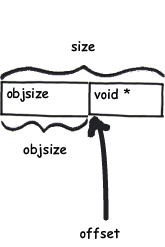
slub系统刚刚创建出来，这是第一次申请。 此时slub系统刚建立起来，营业厅kmem_cache_cpu和仓库kmem_cache_node中没有任何可用的slab可以使用因此只能向伙伴系统申请空闲的内存页，并把这些页面分成很多个object，取出其中的一个object标志为已被占用，并返回给用户，其余的object标志为空闲并放在kmem_cache_cpu中保存。kmem_cache_cpu的freelist变量中保存着下一个空闲object的地址，表示申请一个新的slab，并把第一个空闲的object返回给用户，freelist指向下一个空闲的object
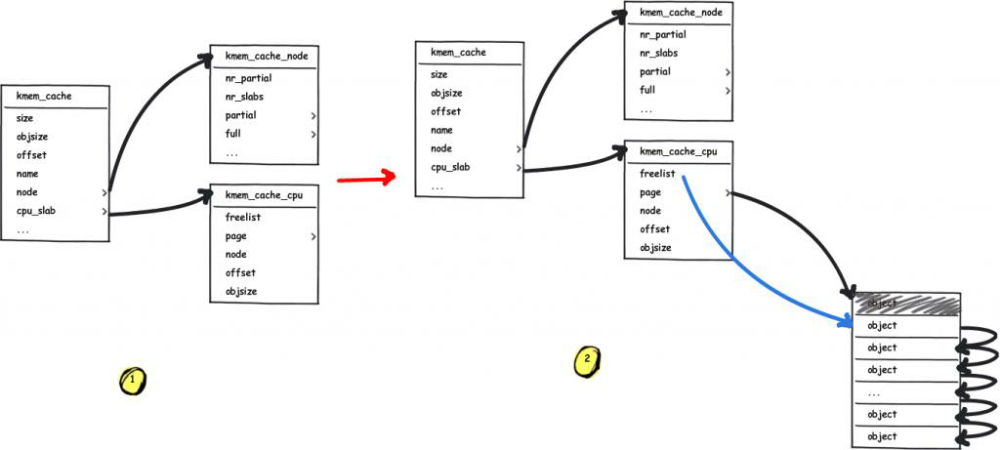
slub的kmem_cache_cpu中保存的slab上有空闲的object可以使用。
这种情况是最简单的一种，直接把kmem_cache_cpu中保存的一个空闲object返回给用户，并把freelist指向下一个空闲的object
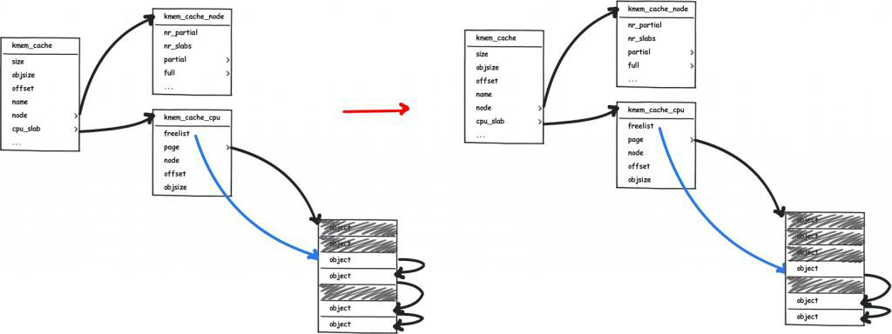
slub已经连续申请了很多页，现在kmem_cache_cpu中已经没有空闲的object了，但kmem_cache_node的partial中有空闲的object 。所以从kmem_cache_node的partial变量中获取有空闲object的slab，并把一个空闲的object返回给用户
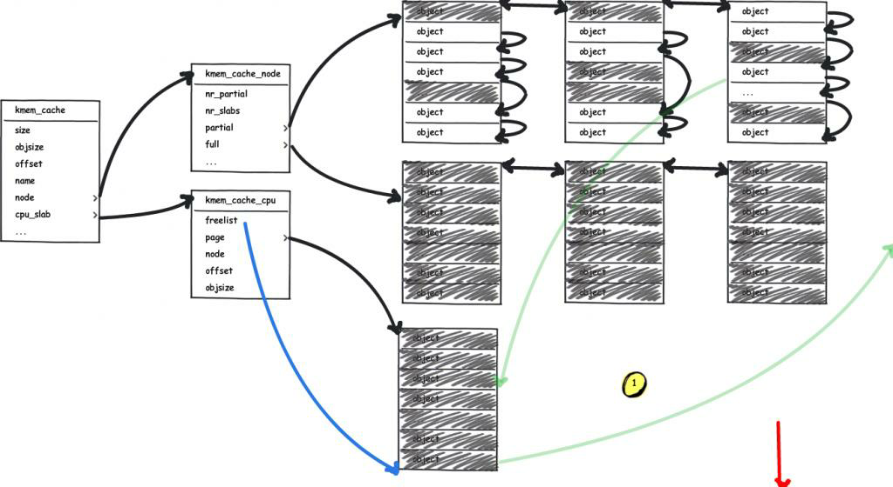

kmem_cache_cpu中已经都被占用的slab放到仓库中，kmem_cache_node中有两个双链表，partial和full，分别盛放不满的slab，slab中有空闲的object和全满的slab，slab中没有空闲的object。然后从partial中挑出一个不满的slab放到kmem_cache_cpu中
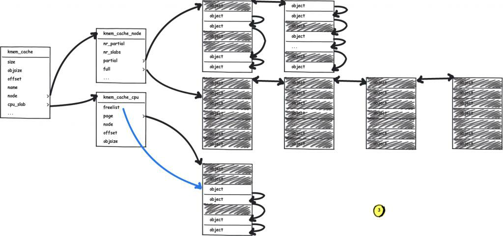
slub已经连续申请了很多页，现在kmem_cache_cpu中保存的物理页上已经没有空闲的object可以使用了，而此时kmem_cache_node中没有空闲的页面了，只能向内存管理器(伙伴算法)申请slab。并把该slab初始化，返回第一个空闲的object
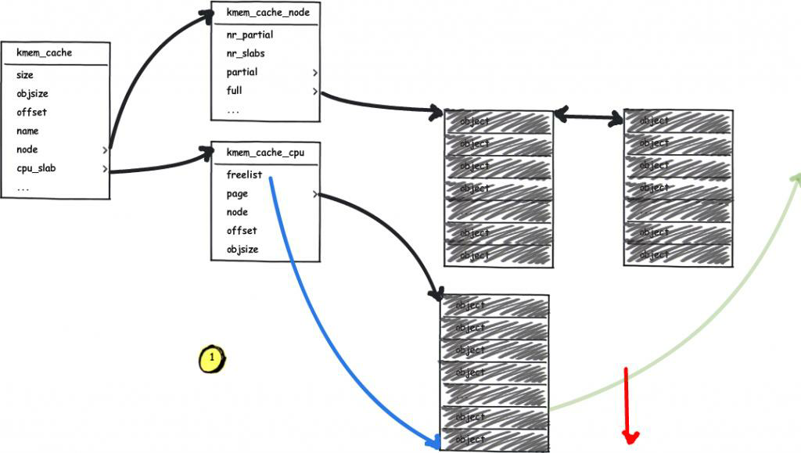
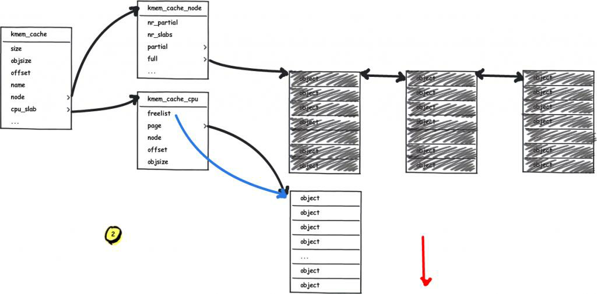
向slub系统释放内存块object时，如果kmem_cache_cpu中缓存的slab就是该object所在的slab，则把该object放在空闲链表中即可，如果kmem_cache_cpu中缓存的slab不是该object所在的slab，然后把该object释放到该object所在的slab中。在释放object的时候可以分为一下三种情况
object在释放之前slab是full状态的时候（slab中的object都是被占用的），释放该object后，这是该slab就是半满（partial）的状态了，这时需要把该slab添加到kmem_cache_node中的partial链表中
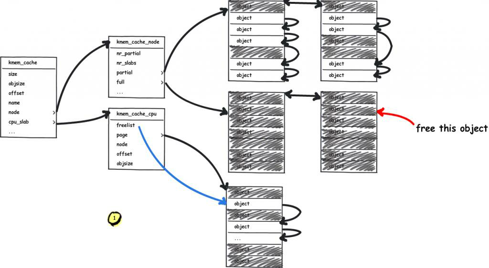
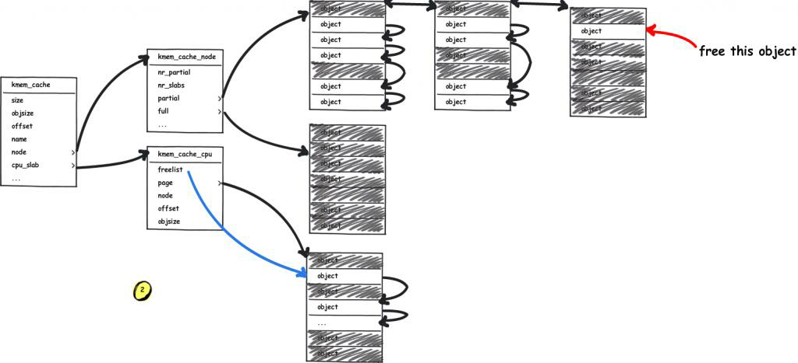
slab是partial状态时（slab中既有object被占用，又有空闲的），直接把该object加入到该slab的空闲队列中即可
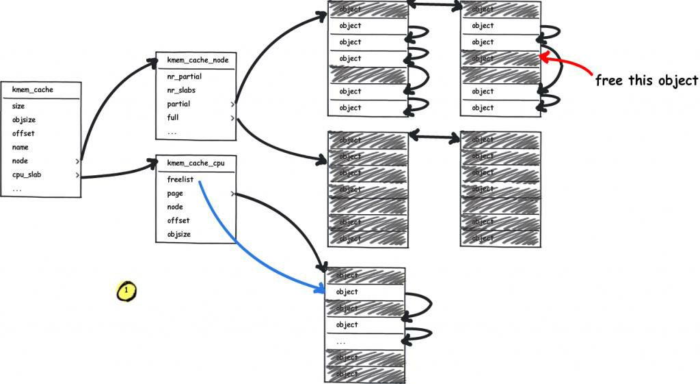
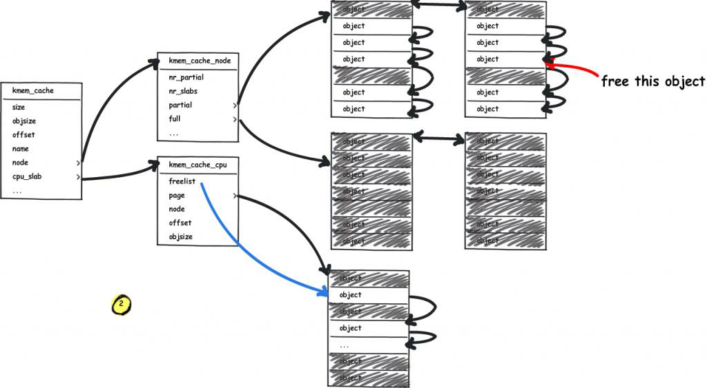
该object在释放后，slab中的object全部是空闲的，还需要把该slab释放掉
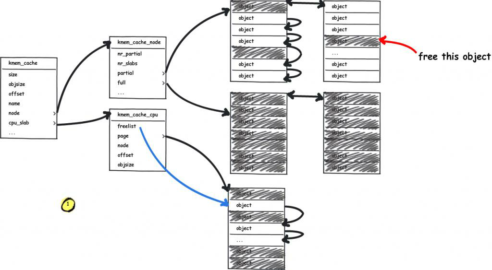
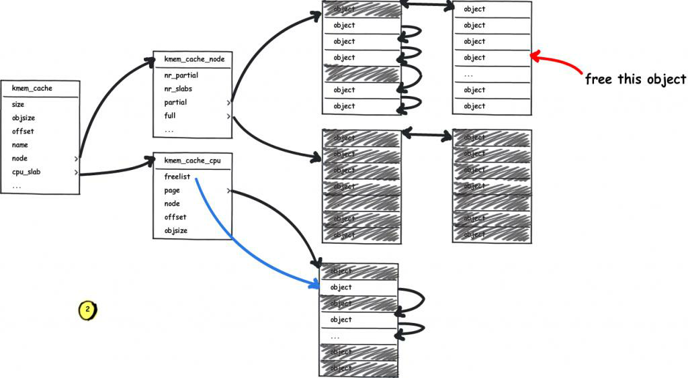
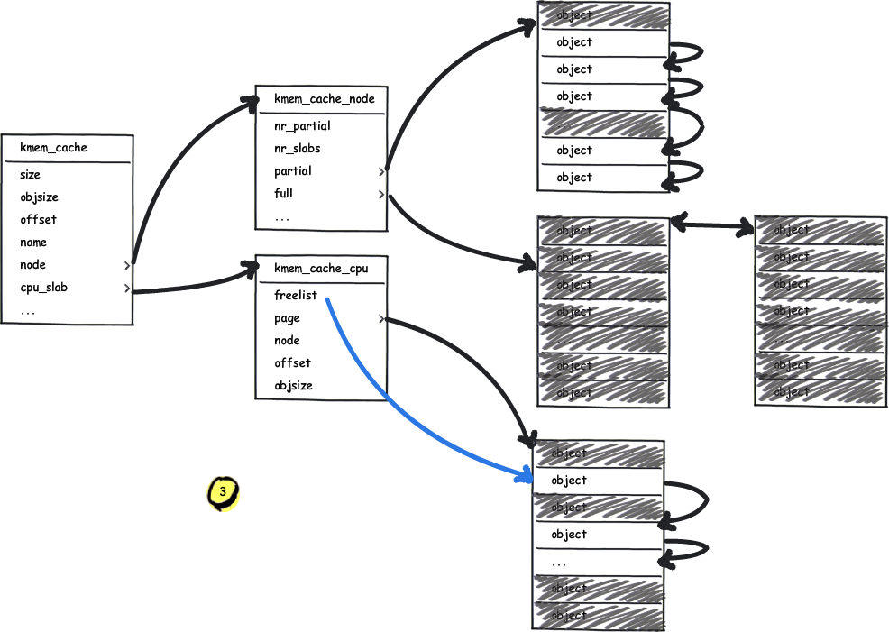
内存管理-vmalloc
随着碎片化的积累，连续物理内存的分配就会变得困难，对于那些非DMA访问（Direct Memory Access，直接存储器访问），不一定非要连续物理内存的话完全可以像malloc那样，将不连续的物理内存页框映射到连续的虚拟地址空间中
主要分以下三步：
- 从
VMALLOC_START到VMALLOC_END查找空闲的虚拟地址空间(hole) - 根据分配的
size,调用alloc_page依次分配单个页面 - 把分配的单个页面，映射到第一步中找到的连续的虚拟地址。把分配的单个页面，映射到第一步中找到的连续的虚拟地址

内存管理-缺页处理
当进程访问这些还没建立映射关系的虚拟地址时，处理器会自动触发缺页异常
ARM64把异常分为同步异常和异步异常，通常异步异常指的是中断，同步异常指的是异常
当处理器有异常发生时，处理器会先跳转到ARM64的异常向量表中，选择如何处理异常
当触发异常的虚拟地址属于某个vma，并且拥有触发页错误异常的权限时，会调用到__handle_mm_fault函数来建立vma和物理地址的映射
- 查找页全局目录，获取地址对应的表项
- 查找页四级目录表项，没有则创建
- 查找页上级目录表项，没有则创建
- 查找页中级目录表项，没有则创建
handle_pte_fault处理pte页表

do_anonymous_page
匿名页缺页异常，对于匿名映射，映射完成之后，只是获得了一块虚拟内存，并没有分配物理内存，当第一次访问的时候：
- 如果是读访问，会将虚拟页映射到０页，以减少不必要的内存分配
- 如果是写访问，用a
lloc_zeroed_user_highpage_movable分配新的物理页，并用０填充，然后映射到虚拟页上去 - 如果是先读后写访问，则会发生两次缺页异常：第一次是匿名页缺页异常的读的处理（虚拟页到
0页的映射），第二次是写时复制缺页异常处理。
从上面的总结我们知道，第一次访问匿名页时有三种情况，其中第一种和第三种情况都会涉及到内核共享0页
do_fault

do_swap_page
pte对应的内容不为0(页表项存在)，但是pte所对应的page不在内存中时，表示此时pte的内容所对应的页面在swap空间中，缺页异常时会通过do_swap_page()函数来分配页面。
do_swap_page发生在swap in的时候，即查找磁盘上的slot，并将数据读回。
换入的过程如下：
- 查找
swap cache中是否存在所查找的页面，如果存在，则根据swap cache引用的内存页，重新映射并更新页表；如果不存在，则分配新的内存页，并添加到swap cache的引用中，更新内存页内容完成后，更新页表。 - 换入操作结束后，对应
swap area的页引用减1，当减少到0时，代表没有任何进程引用了该页，可以进行回收
do_wp_page
走到这里说明页面在内存中，只是PTE只有读权限，而又要写内存的时候就会触发do_wp_page
do_wp_page函数用于处理写时复制（copy on write），其流程比较简单，主要是分配新的物理页，拷贝原来页的内容到新页，然后修改页表项内容指向新页并修改为可写(vma具备可写属性)